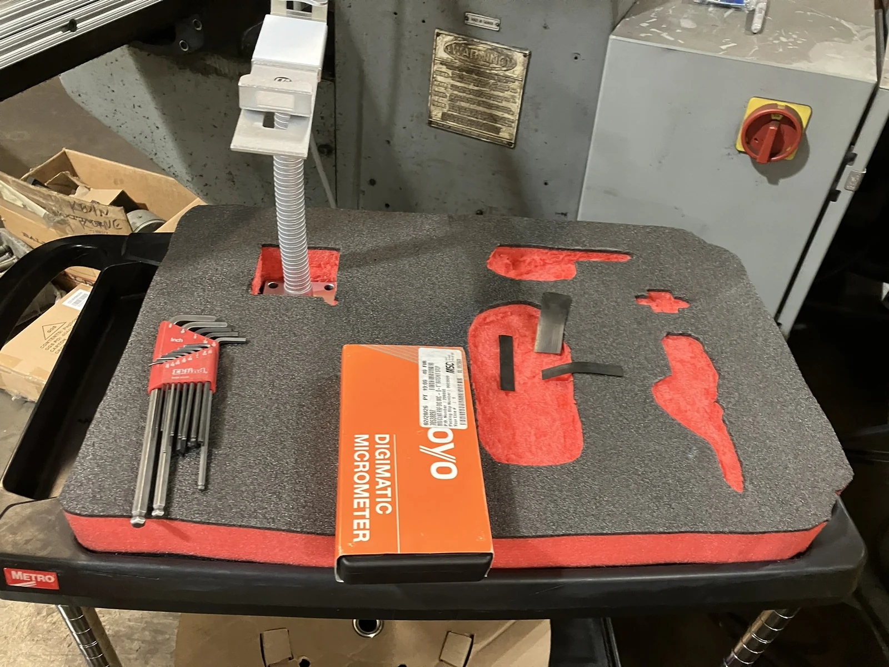
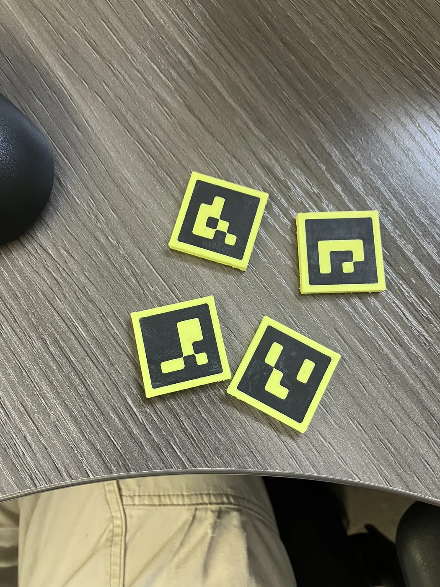

03 / Industrial computer vision
Working prototypeArUco tool-board monitoring
Finding the board, correcting the view, and making missing tools visible.
- Context
- Industrial computer vision
- My contribution
- Computer vision system development
- Toolkit
- Python · ArUco · Camera calibration · Perspective transform · Color segmentation

The challenge
Turn an everyday board into a readable system.
A tool board already encodes useful information: every tool has a designated place. This prototype uses a camera, visual markers, and colored pocket backgrounds to make that information available to software.
The aim is a clear record of what is present and what is missing, supported by annotated images and timestamped logs.
The approach
Geometry first. Presence second.
- 01
Locate the board
ArUco markers provide visual reference points for the tool-board region.
- 02
Normalize the camera view
Camera calibration and perspective correction align the board with defined tool-slot regions.
- 03
Inspect each slot
Color segmentation checks exposed slot backgrounds and creates missing-tool annotations and timestamped records.
Prototype output
Two snapshots. A visible change.

Contribution & scope
Applied computer vision development.
I contributed to development of the camera based monitoring prototype, connecting board recognition, slot inspection, and visual records.
The July 2026 prototype demonstrates present/missing annotations and timestamped logs on the documented tool board. These examples show the workflow in use; long-term false-alarm performance remains to be evaluated.
